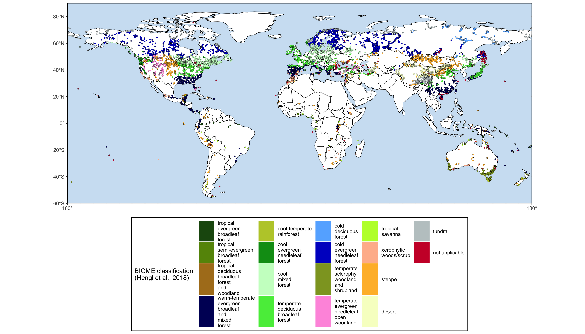

The goal of smpds is to …
Installation
You can install the released version of SMPDS from CRAN with:
install.packages("smpds")And the development version from GitHub with:
# install.packages("devtools")
devtools::install_github("special-uor/smpds")Example
library(smpds)
## basic example code
smpds::SMPDSv2 %>%
dplyr::relocate(reference, DOI, .after = publication) %>%
dplyr::slice(1:20) %>%
smpds::rm_na_taxa(cols = 1:16) %>% # Filter taxa without counts
dplyr::select(1:66) %>% # Select only the metadata (16) + the 50 first taxa
knitr::kable()| original | ID_SMPDSv1 | source | site_name | entity_name | latitude | longitude | elevation | basin_size | site_type | entity_type | age_BP | ID_BIOME | publication | reference | DOI | Abies | Acer | Amaranthaceae | Apiaceae | Artemisia | Asteroideae | Betula | Brassicaceae | Carpinus betulus | Carpinus orientalis | Cichorioideae | Corylus | Cyperaceae | Epilobium | Fagus | Fraxinus ornus | Juglans | Picea | Pinus | Poaceae | Quercus | Ranunculus type | Rubiaceae | Rumex | Scleranthus | Silene type | Ulmus | Xanthium type | Mentha type | Plantago lanceolata | Polygonum aviculare | Ranunculaceae | Alnus | Centaurea jacea type | Juniperus | Tilia | Verbascum type | Cirsium type | Robinia pseudacacia | Trifolium type | Vicia type | Salix | Scrophulariaceae | Silene | Fraxinus excelsior type | Filipendula | Geum type | Viburnum | Cirsium/Carduus type | Rosaceae |
|---|---|---|---|---|---|---|---|---|---|---|---|---|---|---|---|---|---|---|---|---|---|---|---|---|---|---|---|---|---|---|---|---|---|---|---|---|---|---|---|---|---|---|---|---|---|---|---|---|---|---|---|---|---|---|---|---|---|---|---|---|---|---|---|---|---|
| SMPDSv1 | 1 | EMPD | Mt Shipchenska | Atanassova_a1 | 42.74111 | 25.34139 | 1310 | Unknown | moss polster or moss | -52 | 13 | Harrison, Sandy P., 2019. Modern pollen data for climate reconstructions, version 1 (SMPDS). University of Reading. Dataset. doi:10.17864/1947.194 | 7 | 1 | 49 | 5 | 13 | 14 | 97 | 9 | 9 | 9 | 7 | 30 | 9 | 5 | 245 | 1 | 17 | 25 | 495 | 237 | 51 | 4 | 28 | 14 | 5 | 3 | 3 | 12 | |||||||||||||||||||||||||
| SMPDSv1 | 2 | EMPD | Mt Shipchenska | Atanassova_a2 | 42.75556 | 25.32750 | 1195 | Unknown | moss polster or moss | -52 | 13 | Harrison, Sandy P., 2019. Modern pollen data for climate reconstructions, version 1 (SMPDS). University of Reading. Dataset. doi:10.17864/1947.194 | 35 | 36 | 7 | 192 | 26 | 34 | 59 | 165 | 4 | 24 | 277 | 156 | 43 | 8 | 16 | 3 | 7 | 12 | 5 | 1 | 3 | ||||||||||||||||||||||||||||||||
| SMPDSv1 | 3 | EMPD | Mt Shipchenska | Atanassova_a3 | 42.76000 | 25.32750 | 1061 | Unknown | moss polster or moss | -52 | 13 | Harrison, Sandy P., 2019. Modern pollen data for climate reconstructions, version 1 (SMPDS). University of Reading. Dataset. doi:10.17864/1947.194 | 97 | 89 | 15 | 41 | 128 | 111 | 575 | 5 | 525 | 426 | 21 | 73 | 17 | 43 | 8 | 10 | 4 | 1 | |||||||||||||||||||||||||||||||||||
| SMPDSv1 | 4 | EMPD | Mt Shipchenska | Atanassova_a4 | 42.72056 | 25.34083 | 895 | Unknown | moss polster or moss | -52 | 13 | Harrison, Sandy P., 2019. Modern pollen data for climate reconstructions, version 1 (SMPDS). University of Reading. Dataset. doi:10.17864/1947.194 | 41 | 9 | 10 | 5 | 60 | 55 | 9 | 35 | 115 | 10 | 4 | 590 | 20 | 69 | 1 | 5 | 4 | 4 | 41 | ||||||||||||||||||||||||||||||||||
| SMPDSv1 | 5 | EMPD | Mt Shipchenska | Atanassova_a5 | 42.72444 | 25.33722 | 639 | Unknown | moss polster or moss | -52 | 13 | Harrison, Sandy P., 2019. Modern pollen data for climate reconstructions, version 1 (SMPDS). University of Reading. Dataset. doi:10.17864/1947.194 | 1 | 38 | 33 | 25 | 36 | 47 | 98 | 22 | 47 | 121 | 29 | 26 | 359 | 38 | 49 | 28 | 3 | 11 | 10 | 73 | 32 | 2 | 15 | 26 | 75 | ||||||||||||||||||||||||||||
| SMPDSv1 | 6 | EMPD | Mt Shipchenska | Atanassova_b1 | 42.74111 | 25.34139 | 1310 | Unknown | moss polster or moss | -53 | 13 | Harrison, Sandy P., 2019. Modern pollen data for climate reconstructions, version 1 (SMPDS). University of Reading. Dataset. doi:10.17864/1947.194 | 2 | 21 | 40 | 10 | 9 | 51 | 36 | 27 | 6 | 4 | 77 | 6 | 3 | 285 | 149 | 48 | 3 | 33 | 2 | 33 | 4 | 1 | 1 | 5 | |||||||||||||||||||||||||||||
| SMPDSv1 | 7 | EMPD | Mt Shipchenska | Atanassova_b2 | 42.75556 | 25.32750 | 1195 | Unknown | moss polster or moss | -53 | 13 | Harrison, Sandy P., 2019. Modern pollen data for climate reconstructions, version 1 (SMPDS). University of Reading. Dataset. doi:10.17864/1947.194 | 3 | 18 | 2 | 6 | 26 | 64 | 11 | 159 | 1 | 19 | 305 | 111 | 5 | 6 | 26 | 3 | 33 | 26 | |||||||||||||||||||||||||||||||||||
| SMPDSv1 | 8 | EMPD | Mt Shipchenska | Atanassova_b3 | 42.76000 | 25.32750 | 1061 | Unknown | moss polster or moss | -53 | 13 | Harrison, Sandy P., 2019. Modern pollen data for climate reconstructions, version 1 (SMPDS). University of Reading. Dataset. doi:10.17864/1947.194 | 25 | 5 | 1 | 4 | 18 | 3 | 26 | 199 | 13 | 430 | 206 | 34 | 20 | 2 | 1 | 1 | 1 | 16 | 1 | 3 | |||||||||||||||||||||||||||||||||
| SMPDSv1 | 9 | EMPD | Mt Shipchenska | Atanassova_b4 | 42.72056 | 25.34083 | 895 | Unknown | moss polster or moss | -53 | 13 | Harrison, Sandy P., 2019. Modern pollen data for climate reconstructions, version 1 (SMPDS). University of Reading. Dataset. doi:10.17864/1947.194 | 3 | 3 | 15 | 3 | 9 | 46 | 11 | 264 | 5 | 1 | 8 | 496 | 26 | 66 | 19 | 3 | 11 | 4 | 2 | 11 | 7 | ||||||||||||||||||||||||||||||||
| SMPDSv1 | 10 | EMPD | Mt Shipchenska | Atanassova_b5 | 42.72444 | 25.33722 | 639 | Unknown | moss polster or moss | -53 | 13 | Harrison, Sandy P., 2019. Modern pollen data for climate reconstructions, version 1 (SMPDS). University of Reading. Dataset. doi:10.17864/1947.194 | 6 | 5 | 21 | 43 | 10 | 31 | 31 | 20 | 6 | 412 | 25 | 57 | 12 | 3 | 10 | 12 | 23 | 12 | 29 | 11 | |||||||||||||||||||||||||||||||||
| SMPDSv1 | 11 | EMPD | Mt Shipchenska | Atanassova_c1 | 42.74111 | 25.34139 | 1310 | Unknown | moss polster or moss | -54 | 13 | Harrison, Sandy P., 2019. Modern pollen data for climate reconstructions, version 1 (SMPDS). University of Reading. Dataset. doi:10.17864/1947.194 | 11 | 14 | 15 | 9 | 55 | 9 | 20 | 80 | 1 | 4 | 13 | 346 | 341 | 44 | 1 | 13 | 4 | 4 | 14 | 23 | 1 | 10 | 3 | ||||||||||||||||||||||||||||||
| SMPDSv1 | 12 | EMPD | Mt Shipchenska | Atanassova_c2 | 42.75556 | 25.32750 | 1195 | Unknown | moss polster or moss | -54 | 13 | Harrison, Sandy P., 2019. Modern pollen data for climate reconstructions, version 1 (SMPDS). University of Reading. Dataset. doi:10.17864/1947.194 | 10 | 3 | 29 | 150 | 8 | 90 | 2 | 249 | 345 | 50 | 16 | 6 | 3 | 2 | |||||||||||||||||||||||||||||||||||||||
| SMPDSv1 | 13 | EMPD | Mt Shipchenska | Atanassova_c3 | 42.76000 | 25.32750 | 1061 | Unknown | moss polster or moss | -54 | 13 | Harrison, Sandy P., 2019. Modern pollen data for climate reconstructions, version 1 (SMPDS). University of Reading. Dataset. doi:10.17864/1947.194 | 11 | 10 | 19 | 12 | 6 | 36 | 66 | 296 | 5 | 306 | 234 | 20 | 14 | 5 | 7 | 25 | 15 | ||||||||||||||||||||||||||||||||||||
| SMPDSv1 | 14 | EMPD | Mt Shipchenska | Atanassova_c4 | 42.72056 | 25.34083 | 895 | Unknown | moss polster or moss | -54 | 13 | Harrison, Sandy P., 2019. Modern pollen data for climate reconstructions, version 1 (SMPDS). University of Reading. Dataset. doi:10.17864/1947.194 | 20 | 3 | 356 | 4 | 41 | 4 | 14 | 117 | 4 | 420 | 6 | 20 | 21 | 9 | 25 | 14 | 4 | ||||||||||||||||||||||||||||||||||||
| SMPDSv1 | 15 | EMPD | Mt Shipchenska | Atanassova_c5 | 42.72444 | 25.33722 | 639 | Unknown | moss polster or moss | -54 | 13 | Harrison, Sandy P., 2019. Modern pollen data for climate reconstructions, version 1 (SMPDS). University of Reading. Dataset. doi:10.17864/1947.194 | 32 | 11 | 20 | 21 | 10 | 43 | 7 | 32 | 39 | 48 | 1 | 6 | 21 | 291 | 56 | 52 | 4 | 9 | 19 | 23 | 2 | 5 | 4 | 45 | 6 | 17 | 4 | 5 | 6 | 11 | |||||||||||||||||||||||
| SMPDSv1 | 16 | EMPD | Mt Shipchenska | Atanassova_d1 | 42.75556 | 25.32750 | 1195 | Unknown | moss polster or moss | -55 | 13 | Harrison, Sandy P., 2019. Modern pollen data for climate reconstructions, version 1 (SMPDS). University of Reading. Dataset. doi:10.17864/1947.194 | 3 | 42 | 16 | 21 | 66 | 155 | 47 | 12 | 34 | 21 | 93 | 45 | 1276 | 210 | 35 | 20 | 28 | 12 | 10 | 18 | 6 | 24 | 5 | 5 | 7 | 5 | 6 | ||||||||||||||||||||||||||
| SMPDSv1 | 17 | EMPD | Mt Shipchenska | Atanassova_d2 | 42.76000 | 25.32750 | 1061 | Unknown | moss polster or moss | -55 | 13 | Harrison, Sandy P., 2019. Modern pollen data for climate reconstructions, version 1 (SMPDS). University of Reading. Dataset. doi:10.17864/1947.194 | 12 | 32 | 1 | 4 | 1 | 44 | 1 | 48 | 10 | 70 | 11 | 116 | 6 | 220 | 226 | 46 | 62 | 11 | 3 | 14 | 16 | 1 | 12 | 8 | 1 | 11 | |||||||||||||||||||||||||||
| SMPDSv1 | 18 | EMPD/EMB | GravgazMarsh | Bakker_a1 | 37.59118 | 30.40144 | 1241 | medium (1.1-50 km2) | terrestrial, marsh | surface sample | assumed modern | 17 | Harrison, Sandy P., 2019. Modern pollen data for climate reconstructions, version 1 (SMPDS). University of Reading. Dataset. doi:10.17864/1947.194 | 2 | 8 | 24 | 3 | 11 | 122 | 25 | 9 | 1 | |||||||||||||||||||||||||||||||||||||||||||
| SMPDSv1 | 19 | EMPD/EMB | Bereket Basin | Bakker_a10 | 37.55091 | 30.29780 | 1486 | medium (1.1-50 km2) | terrestrial, other sediments | moss polster or moss | assumed modern | 17 | Harrison, Sandy P., 2019. Modern pollen data for climate reconstructions, version 1 (SMPDS). University of Reading. Dataset. doi:10.17864/1947.194 | 33 | 15 | 8 | 2 | 53 | 19 | 926 | 4 | 1 | 1 | ||||||||||||||||||||||||||||||||||||||||||
| SMPDSv1 | 20 | EMPD/EMB | Bereket Basin | Bakker_a11 | 37.54651 | 30.30045 | 1449 | medium (1.1-50 km2) | terrestrial, other sediments | moss polster or moss | assumed modern | 17 | Harrison, Sandy P., 2019. Modern pollen data for climate reconstructions, version 1 (SMPDS). University of Reading. Dataset. doi:10.17864/1947.194 | 1 | 3 | 2 | 5 | 3 | 340 | 2 | 1 |
smpds::SMPDSv2 %>%
smpds::plot_biome()
Code of Conduct
Please note that the SMPDS project is released with a Contributor Code of Conduct. By contributing to this project, you agree to abide by its terms.